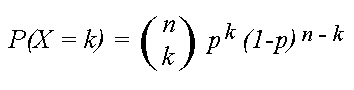

Question 1: Are there significantly more anecdotal than factual Tweets?
Based on our Project Proposal, these will be our Null and Alternative Hypothesis, Null Hypothesis: Only an insignificant number of tweets about the benefits of Ivermectin in curing COVID-19 are based on anecdotal evidence. Alt Hypothesis: A large percentage of tweets about the benefits of Ivermectin in curing COVID-19 were only based on anecdotal evidence. To solve for this we had to use a Binomial Test to determine if the proportion of a binary variable is equal to a a previously claimed value which is that an insignificant number of anecdotal tweets make up the tweets collected. So we assume that the estimate chance of success is 50% which means that a tweet is either Anecdotal or Factual For this we will let the significance level of alpha = 0.05, while we use the formula for a binomial test
where k is the count of anecdotal tweets while n is the total amount of tweets.
from scipy.stats import binom_test
anecdotal_number = df["Theme"].value_counts()[0]
not_anecdotal_number = df["Theme"].value_counts()[1] + df["Theme"].value_counts()[2]
totalnum = anecdotal_number + not_anecdotal_number
p_value = binom_test(anecdotal_number,totalnum, 0.5)
p_value
In the code block above, after doing caterorical encoding to convert the "Anecdotal" to 0 while the "Factual" and "None" are converted to 1 and 2 respectively, After running the code, we ge a p-value of 0.001331825114199613
Since we used an alpha value of 0.05 while our p-value is 0.001331825114199613, We reject the Null Hypothesis and we can conclude that a large percentage of tweets about the benefits of Ivermectin in curing COVID-19 were only based on anecdotal evidence.